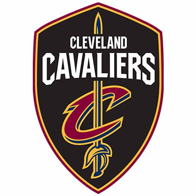

The Cleveland Cavaliers, the Cavs, are an American professional basketball team based in Cleveland, Ohio. The Cavs compete in the National Basketball Association (NBA) as a member of the league's Eastern Conference Central Division. The team began play as an expansion team in 1970, along with the Portland Trail Blazers and Buffalo Braves. Home games were first held at Cleveland Arena from 1970 to 1974, followed by the Richfield Coliseum from 1974 to 1994. Since 1994, the Cavs have played home games at Quicken Loans Arena in downtown Cleveland, which is shared with the Cleveland Gladiators of the Arena Football League and the Cleveland Monsters of the American Hockey League. Dan Gilbert has owned the team since March 2005.
 The Cleveland Browns are a professional American football team based in Cleveland, Ohio. The Browns compete in the National Football League (NFL) as a member club of the American Football Conference (AFC) North division. The Browns play their home games at FirstEnergy Stadium, which opened in 1999,[7][8] with administrative offices and training facilities in Berea, Ohio. The Browns' official colors are brown, orange and white.[3] They are unique among the 32 member franchises of the NFL in that they do not have a logo on their helmets and are the only team named after a specific person, original coach Paul Brown.
The Cleveland Browns are a professional American football team based in Cleveland, Ohio. The Browns compete in the National Football League (NFL) as a member club of the American Football Conference (AFC) North division. The Browns play their home games at FirstEnergy Stadium, which opened in 1999,[7][8] with administrative offices and training facilities in Berea, Ohio. The Browns' official colors are brown, orange and white.[3] They are unique among the 32 member franchises of the NFL in that they do not have a logo on their helmets and are the only team named after a specific person, original coach Paul Brown.